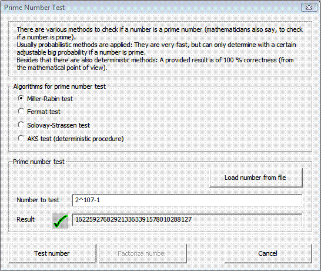

You can access this dialog through the menu Individual Procedures \ RSA Cryptosystem \ Prime Number Test.
Prime numbers are natural numbers greater 1, which can only be divided by 1 and by its own value. Prime numbers are very important in cryptography. In the dialog Prime Number Test you can enter a number and test if it is a prime number or not.

By clicking the button Test number the number in the input field "Number to test" will be tested if it is a prime number or not. There are integers and mathematical terms allowed as input.
Currently the dialog supports only positive numbers up to a bit length smaller than 8192. This corresponds to a decimal number with a maximum of 2466 digits.
The following algorithms can be chosen to perform the prime number test:
The table shows the durations in seconds of the different tests for various prime numbers: The time measurements were made on a PC system equipped with an Intel Pentium-4 processor of 2 GHz.
| Prime number | Miller-Rabin | Fermat | Solovay-Strassen | AKS method |
|---|---|---|---|---|
| 7309 | 0.01 | 0.01 | 0.01 | 12.34 |
| 9004097 | 0.01 | 0.01 | 0.01 | 23:22.55 |
| 2^31-1 | 0.01 | 0.01 | 0.01 | 6:03:14.36 |
| 2^607-1 | 0.61 | 0.61 | 1.62 | n/a |
Table: Duration of the algorithms in seconds.
Using the button Load number from file allows to load a number from a text file. The file has to contain one single number or term without any text. Spaces and line breaks will be automatically removed during import of the data.
Clicking the button Factorize number opens up the dialog Factorization of a number . Please note that this button is active only if the result of a previous prime number test was negative. After clicking the button, the non-prime number is automatically inserted into the new dialog.
Comprehensive information about prime numbers can be found in the script. Further information about the AKS ("Primes in P") can be obtained here.
[1] Agrawal, Kayal, Saxena, "PRIMES is in P", 2002, v6